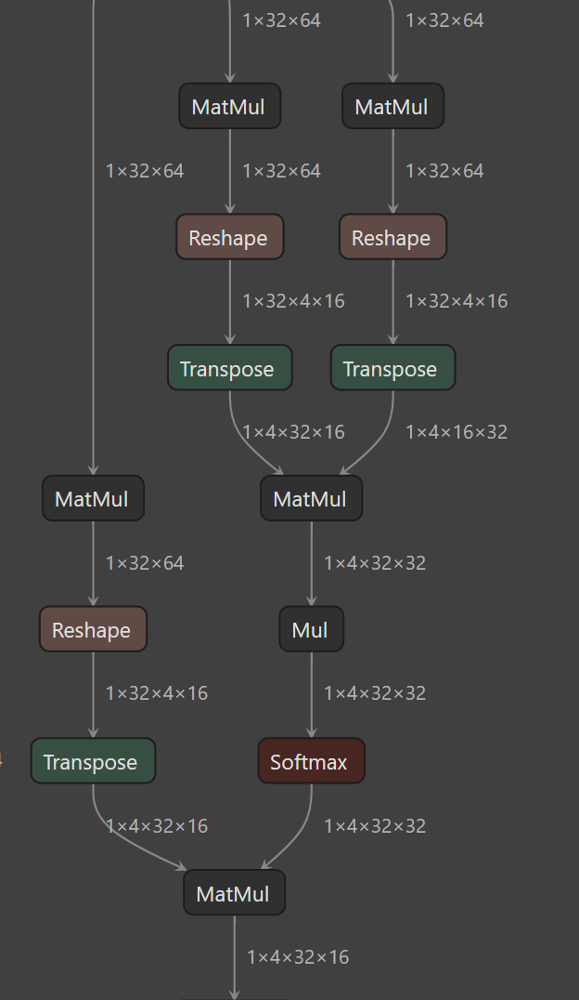

Brainsmith¶
Compile Neural Networks to FPGA Accelerators¶
Brainsmith transforms ONNX models into dataflow accelerators for FPGAs. Through design space exploration, it evaluates hardware configurations to find designs that balance throughput and resource usage.
Automated RTL generation from ONNX models. Design space exploration to identify optimal configurations.
From ONNX to Hardware¶
Your ONNX Model
Standard neural network representation from PyTorch, TensorFlow, or ONNX Runtime

Dataflow Core
Streaming architecture with configurable parallelization and memory hierarchy

Key Features¶
-
Automatic Design Space Exploration
Navigate parallelization factors, resource allocation, and architectural choices. Explore multiple configurations to identify promising designs.
-
Schema-Driven Kernel Development
Define hardware semantics declaratively. Validation, design space construction, and interface generation are derived from schema definitions.
-
Synthesizable RTL Generation
Generate Verilog/VHDL with standard AXI-Stream interfaces. Compatible with Vivado IP Integrator workflows.
-
Growing Kernel Library
Built-in support for MVAU, LayerNorm, Softmax, and other common operations. Extensible architecture for adding custom kernels.
-
Performance Estimation
Resource estimation, cycle-accurate simulation support, and throughput analysis. Evaluate design tradeoffs before synthesis.
-
Blueprint Inheritance
Reuse and customize configurations through YAML inheritance. Design space exploration with branch points and step operations.
Basic Usage¶
Generate an accelerator with a single command:
# Design space exploration and RTL generation
smith dfc model.onnx blueprint.yaml
# Output: RTL + performance estimates + resource reports
Or use the Python API for programmatic control:
from brainsmith import explore_design_space
from brainsmith.dse import SegmentStatus
# Explore design space
results = explore_design_space(
model_path="bert_model.onnx",
blueprint_path="config.yaml"
)
# Analyze results
stats = results.compute_stats()
print(f"Explored {stats['total']} configurations")
print(f"Successful: {stats['successful']}")
Get Started¶
-
Quickstart Guide
Install Brainsmith and run your first accelerator build in 30 minutes with the BERT example.
-
Kernel Development
Learn the schema-driven architecture and build custom hardware operators for your models.
-
Blueprint Configuration
Master the YAML configuration format for design space definition and pipeline customization.
-
API Reference
Explore complete API documentation for DSE, dataflow modeling, and component registry.
Built For¶
AI Researchers
Explore FPGA deployment for edge devices with strict latency requirements. Evaluate FPGA acceleration as an alternative to CPU/GPU inference.
Hardware Engineers
Build neural network accelerators using schema-driven kernel definitions. Design space exploration handles configuration space navigation.
MLOps Teams
Explore FPGA deployment as an alternative to GPU inference. Design space exploration automates configuration search.
Example Results¶
The BERT example demonstrates the design space exploration workflow:
- Evaluated configurations ranging from 1 FPS to 5000+ FPS on ZCU104 (250MHz)
- Design space exploration identifies resource/performance tradeoffs
- Compatible with Xilinx Zynq/Ultrascale+ platforms using Vivado 2024.2
Results from examples/bert - your mileage may vary based on model and target platform
Example: BERT Accelerator¶
# blueprint.yaml - Define your design space
name: "BERT Accelerator"
clock_ns: 5.0 # 200MHz target
design_space:
kernels:
- MVAU # Matrix-vector operations
- LayerNorm # Layer normalization
- Softmax # Attention softmax
steps:
- "streamline" # Graph optimization
- "infer_kernels" # Hardware kernel mapping
- "specialize_layers" # Backend selection
- "dataflow_partition" # Multi-layer offload
Run design space exploration:
Results include:
- Synthesizable RTL in results/stitched_ip/
- Performance estimates in results/report/estimate_reports.json
- Detailed build logs for debugging
Open Source & Collaborative¶
Brainsmith is MIT-licensed and builds upon a foundation of proven open-source tools:
- FINN - Dataflow compiler for quantized neural networks
- QONNX - Quantized ONNX representation
- Brevitas - PyTorch quantization library
Developed through collaboration between Microsoft and AMD.
License: MIT - see LICENSE
Community & Support¶
- GitHub Issues - Report bugs or request features
- GitHub Discussions - Ask questions and share experiences
- Contributing Guide - Learn how to contribute
New to Brainsmith? Get started with the quickstart guide →